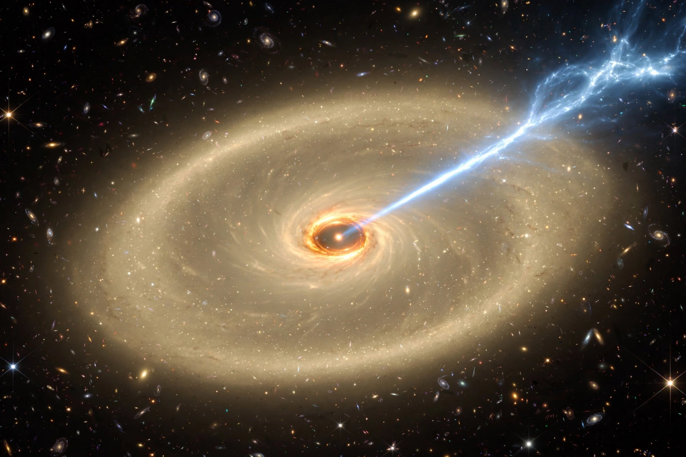

Messier 87 (M87, NGC 4486) is a supergiant elliptical galaxy in the constellation Virgo, about 53.5 million light-years away, the dominant galaxy of the Virgo Cluster.

Messier 87Its centre hosts one of the most massive known supermassive black holes. On 10 April 2019 the Event Horizon Telescope released the first direct image of a black hole's shadow in M87*. A relativistic jet extends thousands of light-years, visible across the spectrum.
M87 has an unusually large system of globular clusters (~12,000), a population of ultra-compact dwarfs, and is a strong radio source (Virgo A). Discovered by Charles Messier in 1781. See Event Horizon Telescope, Virgo Cluster.